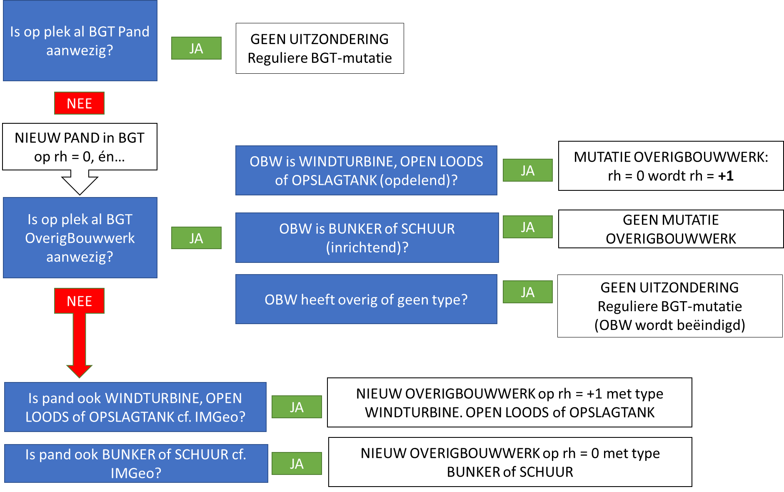

Naamsvermelding-GeenAfgeleideWerken 3.0 Nederland (CC BY-ND 3.0)
Abstract
Dit document beschrijft een werkafspraak voor toepassing van de BGT|IMGeo standaarden door BGT bronhouders als gevolg van de aangepaste afbakeningsregels voor panden in BAG 2.0.
Status of This Document
Dit is een definitief concept van de nieuwe versie van de standaard. Wijzigingen naar aanleiding van consultaties zijn doorgevoerd.
De programmaraad van Geonovum beoordeelt dit definitief concept. Keurt zij het goed, dan is er een nieuwe standaard.
1. Aanleiding
In het kader van de herziening van de wet- en regelgeving voor de BAG (ook wel
‘BAG 2.0’ genoemd) is er per 1 juli 2018 een nieuwe Catalogus BAG
(2018)
in werking. In deze Catalogus zijn t.o.v. de vorige Catalogus de
afbakeningsregels aangescherpt en zijn er zoveel mogelijk uitzonderingen op de
reguliere regels (zoals beschreven in het Objectenhandboek BAG) geschrapt. Als
gevolg daarvan zullen bepaalde objecten die voorheen (‘BAG 1.0’) niet als Pand
werden afgebakend (bijvoorbeeld bunker of windturbine, op grond van een
uitzonderingsregel) met ingang van BAG 2.0 wel als Pand worden opgenomen in de
BAG (mits ze aan definitie en afbakeningsregels voldoen).
Deze objecten komen nu veelal voor in de BGT als OverigBouwwerk met een typering
van het bouwwerk. Een Pand in de BGT heeft geen nadere typering
Voorbeeld windturbine:
BAG 1.0 stelt dat een windturbine als uitzondering geen Pand is, en
conform de huidige versie van BGT|IMGeo wordt deze windturbine opgenomen
als OverigBouwwerk:windturbine in de BGT.
BAG 2.0 stelt dat deze windturbine -indien voldoet aan de definitie en
afbakeningsregels- als Pand wordt opgenomen in de BAG, en vervolgens als
Pand in de BGT.
Op het moment dat deze overige bouwwerken worden omgezet naar panden in de BAG
en dus BGT, treedt informatieverlies voor gebruikers op. Een windturbine is als
BGT Pand als zodanig niet herkenbaar door het ontbreken van typering voor panden
in de BGT.
In een volgende versie van BGT|IMGeo wordt mogelijk de typering van panden
toegevoegd aan het model. Echter, deze versie van IMGeo kan niet voor de
inwerkingtreding van BAG 2.0 (1 juli 2018) worden gerealiseerd.
De volgende twee uitgangspunten zijn aanleiding voor deze werkafspraak:
Informatieverlies ten opzichte van de huidige inhoud van IMGeo moet
voorkomen worden. Bronhouders dienen de typeringen van OverigeBouwwerken
conform de huidige spelregels van IMGeo op te nemen in de BGT (zie BGT
Catalogus
en IMGeo
Catalogus).
BAG en BGT dienen consistent te zijn wat betreft populatie van Panden. BGT
neemt altijd panden uit de BAG over. Mutaties van panden worden niet
aangehouden tot een nieuw model van IMGeo beschikbaar is.
Om die reden geldt de volgende werkafspraak voor de periode van inwerkingtreding
BAG 2.0 tot de aanpassing van het model van IMGeo om informatieverlies als
gevolg van BAG 2.0 op te vangen. Daarbij wordt de BGT bronhouder geadviseerd om
in deze periode voor een bouwwerk zowel een Pand als een OverigBouwwerk met type
in de BGT te registreren (‘dubbel registreren’). Na aanpassing van het model van
IMGeo kunnen het Pand en OverigBouwwerk met type weer worden samengevoegd tot
één object: een Pand/Bouwwerk met type.
2. Werkafspraak
De volgende werkafspraak geldt voor de BGT keten voor het behandelen van
mutaties vanuit de BAG als gevolg van toepassing van de BAG 2.0
afbakeningsregels door BAG (zie Catalogus BAG
2018):
Bij opvoeren van nieuwe panden in de BAG, neemt BGT bronhouder altijd deze
panden over in de BGT. Daarnaast legt BGT bronhouder de typering van het
OverigBouwwerk conform het huidige spelregels van IMGeo in een extra laag
vast.
2.1 Toelichting
Deze werkafspraak betekent het volgende:
Als BAG een nieuw Pand opvoert, dan neemt BGT bronhouder dit object altijd
binnen de geldende actualiteitseisen als Pand op in de BGT.
Als dit bouwwerk conform het huidige IMGeo als OverigBouwwerk met bepaalde
typering in de verplichte BGT voorkomt, dan moet BGT bronhouder ook een
OverigBouwwerk met dit type opnemen.
Als dit bouwwerk conform het huidige IMGeo als OverigBouwwerk met bepaalde
typering in het optionele deel van IMGeo voorkomt, dan mag BGT bronhouder
ook een OverigBouwwerk met dit type opnemen.
Deze werkafspraak geldt voor de volgende objecten:
Verplichte BGT: windturbine, open loods (of open frontstal),
opslagtank (of silo)
In de bijlage is een werkinstructie opgenomen hoe BGT bronhouder bovenstaande
werkafspraak toe kan passen.
2.2 Aandachtspunten
Hieronder worden enige aandachtspunten beschreven bij de toepassing van deze
werkafspraak.
Meer objecten worden pand met BAG 2.0 Door de nieuwe afbakeningsregels en
het schrappen van uitzonderingen in BAG 2.0 worden méér objecten als pand
afgebakend. Een OverigBouwwerk in de BGT kan dus een Pand worden, en niet
andersom.
Alleen objecten die voldoen aan criteria BAG 2.0 worden Pand. Niet alle
overige bouwwerken in de BGT zullen als Pand worden afgebakend. Objecten die
niet voldoen aan de definities en afbakeningscriteria van BAG (zie Catalogus
BAG
2018)
worden niet als Pand opgenomen. Bijvoorbeeld, kleine windturbines die niet
betreedbaar zijn, en waar geen persoon in kan staan.
Pand op maaiveldniveau, OverigeBouwwerken naar inrichtende laag Panden
worden altijd op maaiveldniveau in de BGT opgenomen. Bij het opnemen van
typeringen van OverigeBouwwerken in de extra laag, kunnen overlap-conflicten
ontstaan als verplichte OverigeBouwwerken en Panden op elkaar liggen. Een
verplicht/opdelend OverigBouwwerk dient op een andere relatieve hoogte dan het
Pand te worden gelegd, voor een optioneel/inrichtend
Alleen BAG 2.0 bij nieuwe gevallen/vergunningen en terugmeldingenKwaliteitskader BAG 2.0
2018
adviseert BAG bronhouders om alleen de BAG 2.0 afbakeningsregels toe te passen
bij nieuwe gevallen/vergunningen en bij terugmeldingen (in verband met impact).
Er wordt niet met terugwerkende kracht getracht om alle panden conform BAG 2.0
op te voeren. Het is dus niet de bedoeling om via mutatiesignalering uit
luchtfoto’s de BAG (en dus BGT) met panden conform BAG 2.0 te vullen, indien de
bronhouder dit voor zijn eigen processen nodig acht mag het overigens wel.
Verplicht vs. optioneel Bij vergunningverlening mogen Panden met status
‘plan’ worden opgenomen in de BGT; vanaf status ‘Bouw gestart’ moeten Panden
met status ‘bestaand’ worden opgenomen in de BGT. Idem geldt voor OverigBouwwerk
van het type ‘windturbine’, ‘open loods’, ‘opslagtank’ dat deze tot de
verplichte inhoud van de BGT toe behoren; ‘schuur’ en ‘bunker’ zijn vrijwillige,
optionele IMGeo inhoud. Deze werkafspraak ontslaat BGT bronhouder niet van de
verplichting om BGT-gegevens conform het huidige model te leveren aan de LV-BGT.
BAG als bron voor Panden Deze werkafspraak gaat er van uit dat BGT
bronhouder de panden muteert op aangeven van BAG. Als in een organisatie andere
afspraken zijn gemaakt dat ontstaan van panden begint BGT, blijft gelden dat BGT
bronhouder zowel de Panden overneemt als de OverigeBouwwerken conform huidig
IMGeo.
3. Impact
De volgende impact wordt voorzien voor de schakels in de BGT keten.
Bronhouder moet dubbel registreren, dus dubbelwerk. Dubbelwerk wordt
verwacht opgelost te worden met IMGeo 3.0 c.q. de integrale objectenregistratie.
Softwareleverancier heeft geen impact, als bronhoudersoftware werkt conform
de (topologische) eisen van IMGeo.
SVB-BGT/LV-BGT heeft geen impact. De techniek van de BGT keten kan deze
werkafspraak aan.
Gebruiker wordt geconfronteerd met dubbele objecten op dezelfde locatie.
Communicatie wenselijk.
4. Registratie
Een melding over dit onderwerp is opgenomen in het registratiesysteem dat
Geonovum voor het beheer van de BGT|IMGeo standaarden gebruikt. Het issue is
bekend onder: Github #26.
5. Bijlage: Werkinstructie
Deze bijlage geeft in meer detail de werkinstructies voor BGT bronhouder.
5.1 Scenario’s
Aanleiding om deze werkinstructie er bij te pakken is dat BGT een mutatie op of
een nieuw pand vanuit BAG heeft ontvangen. Er worden drie scenario’s
onderscheiden:
Op de plek van het BAG-Pand is reeds een BGT Pand aanwezig Voor de BGT
is dit een reguliere mutatie: de gegevens van het BGT Pand worden bijgewerkt
op basis van de gegevens van BAG.
Op de plek van het BAG-Pand is een OverigBouwwerk aanwezig In dat geval
neemt de BGT bronhouder een nieuw BGT Pand op, én indien het OverigBouwwerk
van het type:
Windturbine, open loods of opslagtank wijzigt BGT bronhouder de
relatieve hoogteligging van het OverigBouwwerk naar één hoger dan het nieuwe
BGT Pand.
Schuur of bunker hoeft BGT bronhouder geen wijziging op dit
OverigBouwwerk door te voeren.
Niet ingevuld/leeg beëindigd BGT bronhouder het OverigBouwwerk. De
eventueel gekoppelde gegevens in de eigen omgeving aan het OverigBouwwerk
worden gekoppeld aan het nieuwe Pand.
Op de plek van het BAG-Pand is geen Pand of OverigBouwwerk aanwezig In
In dat geval neemt de BGT bronhouder een nieuw Pand op, én een nieuw
OverigBouwwerk conform de huidige regels van IMGeo, waarbij een
OverigBouwwerk van type:
Windturbine, open loods of opslagtank verplicht wordt opgenomen
op een relatieve hoogteligging één hoger dan het nieuwe Pand.
Schuur of bunker optioneel wordt opgenomen op dezelfde relatieve
hoogteligging als het nieuwe Pand.
5.2 Beslisboom
De drie scenario’s zijn uitgewerkt in onderstaande beslisboom.

5.3 Overzichttabel
In onderstaande overzichtstabel is per objecttype, aanleiding en doorwerking in
BAG beschreven hoe BGT bronhouder de gegevens in de BGT dient over te nemen.